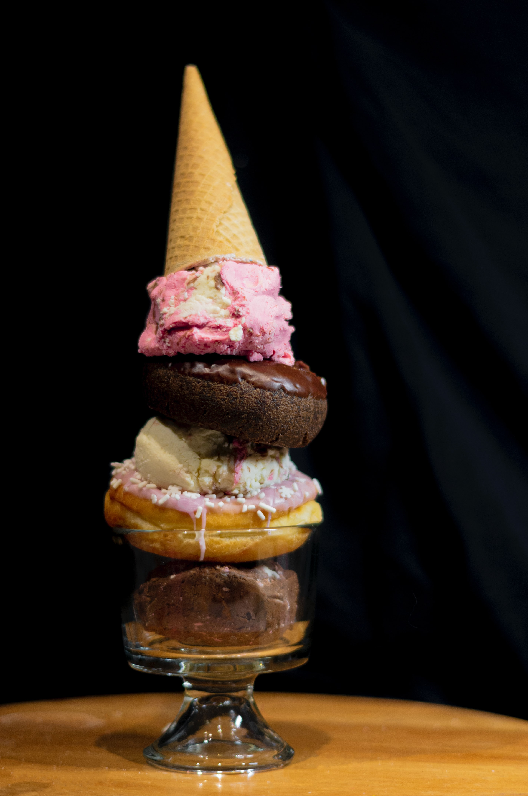

Icecream Cake

This is a basic recipe for ice cream cake. You can use any flavor of ice cream or cake mix you like! Frost with frosting or fudge topping or thinned ice milk or anything!
Ingredients
- 1 (18.25 ounce) package chocolate cake mix
- ½ gallon chocolate ice cream, softened
Steps
- Prepare cake according to package directions; bake in a 9x13 inch baking dish and cool completely.
- Use ice cream that comes in a rectangular carton. Remove the carton and, using a piece of string or dental floss, cut the ice cream in half lengthwise (long side to long side) and place the two layers side by side on a piece of waxed paper.
- Place the cooled cake over the ice cream. Trim the cake and ice cream so that the edges match.
- Place a board or serving platter over the cake, hold onto the waxed paper and board, and flip the ice cream cake over. Remove the waxed paper and smooth out the seam between the ice cream slabs.
- Cover with waxed paper and freeze until very firm. Decorate as desired.
Return To Main Page